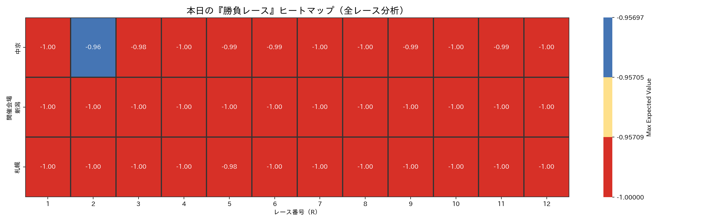
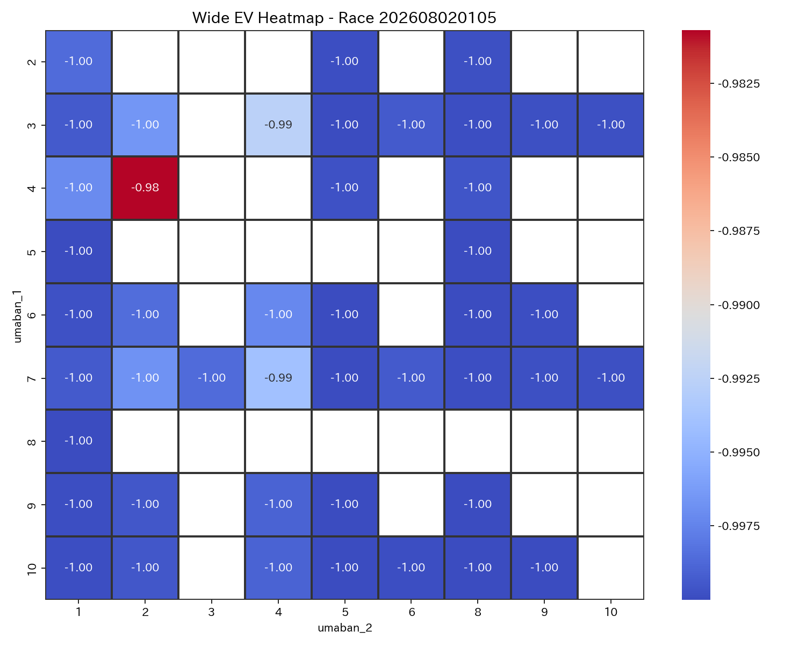
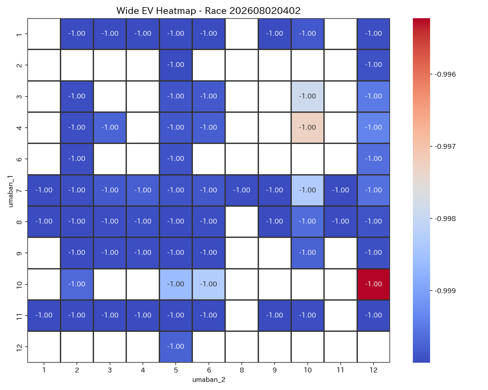
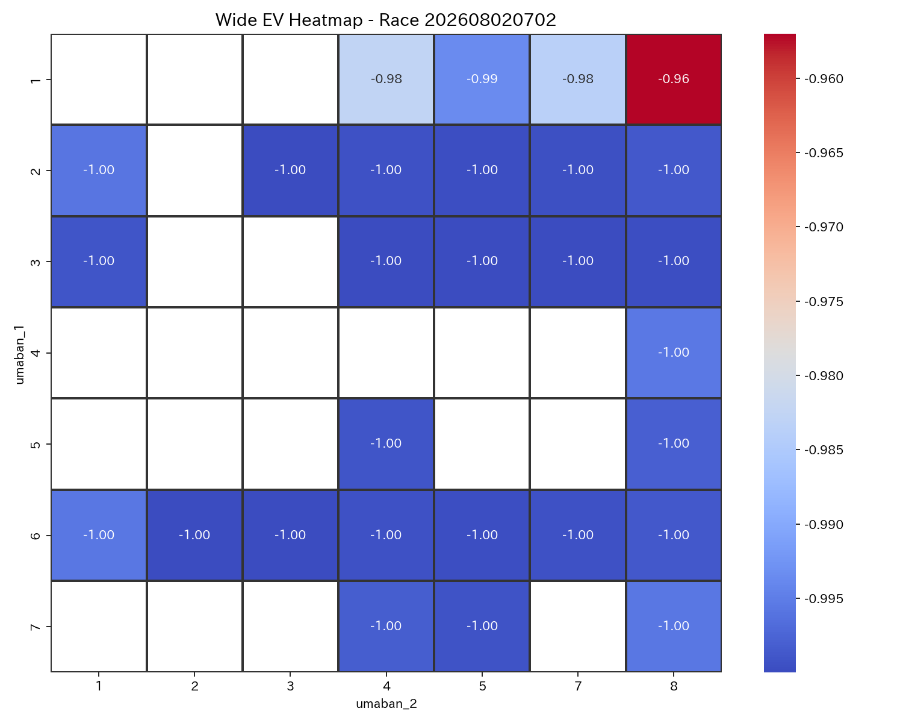
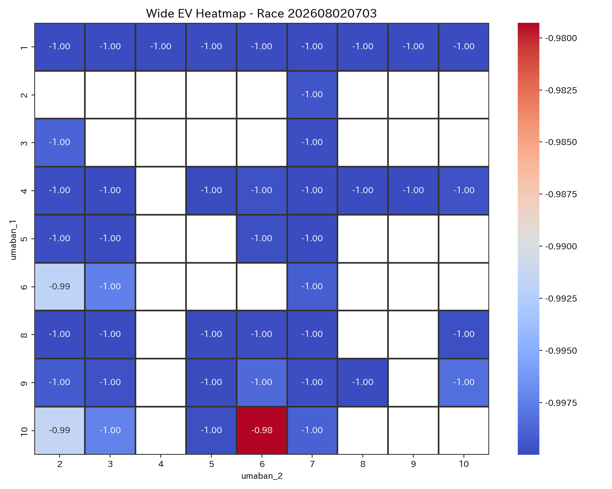
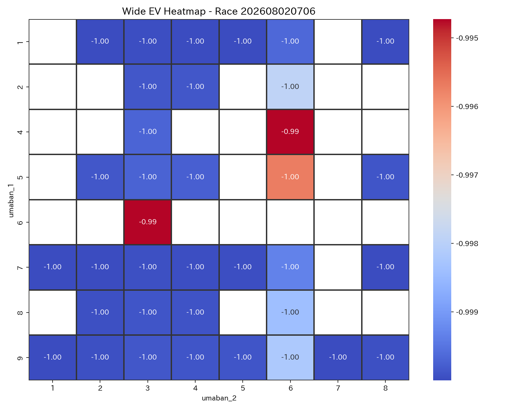
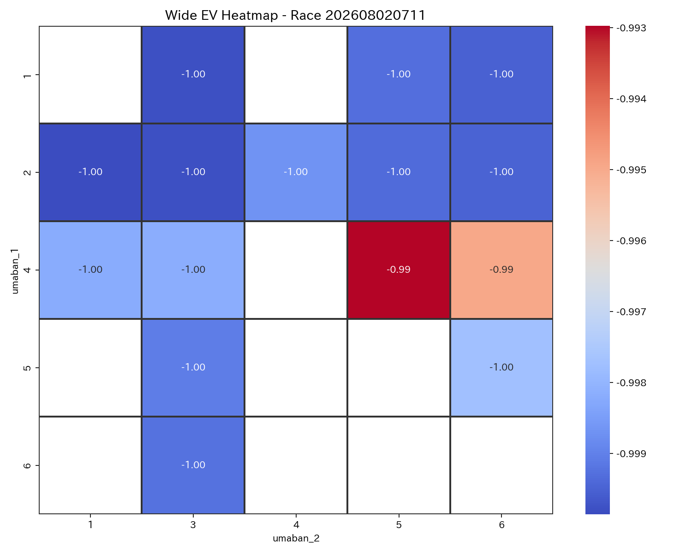

| race_label_ui | race_score | difficulty_score | comment |
|---|---|---|---|
| 中京2R | 0.813859 | 0.437867 | 勝負度が非常に高いレースです。 比較的堅めの決着が期待できます。 本命は 1-8。 EV=-0.96, p_hit=0.014 とバランスが良好です。 次点候補は 1-4。 EV=-0.98。 適度なリスクで、標準的な賭け方が適しています。 |
| 中京3R | 0.440145 | 0.401307 | やや勝負度があるレースです。 比較的堅めの決着が期待できます。 本命は 10-6。 EV=-0.98, p_hit=0.007 とバランスが良好です。 次点候補は 10-2。 EV=-0.99。 適度なリスクで、標準的な賭け方が適しています。 |
| 札幌5R | 0.420303 | 0.394283 | やや勝負度があるレースです。 堅い決着が見込まれるレースです。 本命は 4-2。 EV=-0.98, p_hit=0.006 とバランスが良好です。 次点候補は 3-4。 EV=-0.99。 適度なリスクで、標準的な賭け方が適しています。 |
| 中京11R | 0.258320 | 0.194772 | 勝負度は低めで、慎重に扱いたいレースです。 堅い決着が見込まれるレースです。 本命は 4-5。 EV=-0.99, p_hit=0.002 とバランスが良好です。 次点候補は 4-6。 EV=-0.99。 比較的リスクが低く、厚めに張る選択肢もあります。 |
| 中京6R | 0.229609 | 0.312339 | 勝負度は低めで、慎重に扱いたいレースです。 堅い決着が見込まれるレースです。 本命は 6-3。 EV=-0.99, p_hit=0.002 とバランスが良好です。 次点候補は 4-6。 EV=-0.99。 適度なリスクで、標準的な賭け方が適しています。 |
| 新潟2R | 0.221306 | 0.425047 | 勝負度は低めで、慎重に扱いたいレースです。 比較的堅めの決着が期待できます。 本命は 10-12。 EV=-1.00, p_hit=0.002 とバランスが良好です。 次点候補は 4-10。 EV=-1.00。 適度なリスクで、標準的な賭け方が適しています。 |
| race_label_ui | bet_type | selection_ui | umaban_1 | umaban_2 | bet_score | ev | p_hit | odds | return_amount | hit_status | is_nonstarter | is_nonstarter_1 | is_nonstarter_2 |
|---|---|---|---|---|---|---|---|---|---|---|---|---|---|
| 札幌5R | wide | 4-2 | 4 | 2 | 0.498283 | -0.980702 | 0.006433 | 2.9 | NaN | 未確定 | 0 | 0 | 0 |
| 札幌5R | wide | 3-4 | 3 | 4 | 0.305063 | -0.992568 | 0.002477 | 4.0 | NaN | 未確定 | 0 | 0 | 0 |
| 新潟2R | wide | 10-12 | 10 | 12 | 0.221998 | -0.995226 | 0.001591 | 5.3 | NaN | 未確定 | 0 | 0 | 0 |
| 新潟2R | wide | 4-10 | 4 | 10 | 0.188401 | -0.997289 | 0.000904 | 9.7 | NaN | 未確定 | 0 | 0 | 0 |
| 中京6R | wide | 6-3 | 6 | 3 | 0.231807 | -0.994725 | 0.001758 | 2.4 | NaN | 未確定 | 0 | 0 | 0 |
| 中京6R | wide | 4-6 | 4 | 6 | 0.231705 | -0.994732 | 0.001756 | 1.5 | NaN | 未確定 | 0 | 0 | 0 |
| 中京3R | wide | 10-6 | 10 | 6 | 0.525352 | -0.979283 | 0.006906 | 6.9 | NaN | 未確定 | 0 | 0 | 0 |
| 中京3R | wide | 10-2 | 10 | 2 | 0.325236 | -0.991573 | 0.002809 | 5.1 | NaN | 未確定 | 0 | 0 | 0 |
| 中京2R | wide | 1-8 | 1 | 8 | 0.962772 | -0.957008 | 0.014331 | 3.4 | NaN | 未確定 | 0 | 0 | 0 |
| 中京2R | wide | 1-4 | 1 | 4 | 0.546221 | -0.982592 | 0.005803 | 2.9 | NaN | 未確定 | 0 | 0 | 0 |
| 中京11R | wide | 4-5 | 4 | 5 | 0.266086 | -0.992973 | 0.002342 | 2.0 | NaN | 未確定 | 0 | 0 | 0 |
| 中京11R | wide | 4-6 | 4 | 6 | 0.233943 | -0.994947 | 0.001684 | 2.1 | NaN | 未確定 | 0 | 0 | 0 |
勝負度が非常に高いレースです。 比較的堅めの決着が期待できます。 本命は 1-8。 EV=-0.96, p_hit=0.014 とバランスが良好です。 次点候補は 1-4。 EV=-0.98。 適度なリスクで、標準的な賭け方が適しています。
やや勝負度があるレースです。 比較的堅めの決着が期待できます。 本命は 10-6。 EV=-0.98, p_hit=0.007 とバランスが良好です。 次点候補は 10-2。 EV=-0.99。 適度なリスクで、標準的な賭け方が適しています。
やや勝負度があるレースです。 堅い決着が見込まれるレースです。 本命は 4-2。 EV=-0.98, p_hit=0.006 とバランスが良好です。 次点候補は 3-4。 EV=-0.99。 適度なリスクで、標準的な賭け方が適しています。
勝負度は低めで、慎重に扱いたいレースです。 堅い決着が見込まれるレースです。 本命は 4-5。 EV=-0.99, p_hit=0.002 とバランスが良好です。 次点候補は 4-6。 EV=-0.99。 比較的リスクが低く、厚めに張る選択肢もあります。
勝負度は低めで、慎重に扱いたいレースです。 堅い決着が見込まれるレースです。 本命は 6-3。 EV=-0.99, p_hit=0.002 とバランスが良好です。 次点候補は 4-6。 EV=-0.99。 適度なリスクで、標準的な賭け方が適しています。
勝負度は低めで、慎重に扱いたいレースです。 比較的堅めの決着が期待できます。 本命は 10-12。 EV=-1.00, p_hit=0.002 とバランスが良好です。 次点候補は 4-10。 EV=-1.00。 適度なリスクで、標準的な賭け方が適しています。